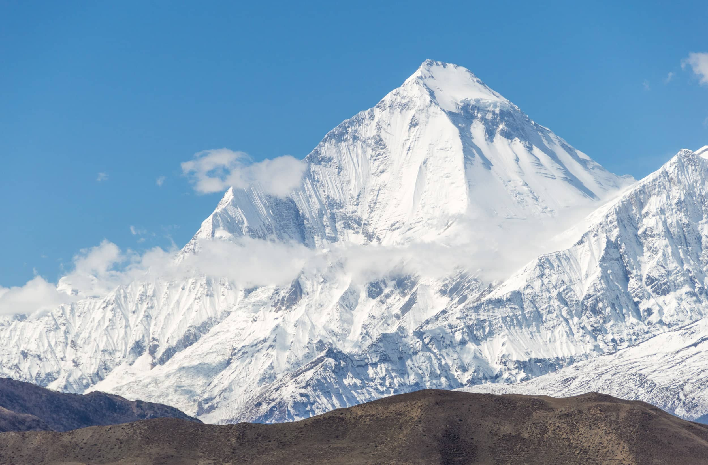

Cho Oyu
Šeštas pagal aukštį kalnas pasaulyje, kurio aukštis 8188 metrai virš jūros lygio. Cho Oyu tibetiečių kalba reiškia „turkio deivė“
Daugiau...

Dhaulagiri
Šį masyvą šiaurėje ir pietvakariuose riboja Bheri upės intakai. Septintas pagal aukštį pasaulio kalnas, kurio aukštis yra 8 167 metrai
Daugiau...Manaslu
Aštuntas pagal aukštį kalnas pasaulyje. Jis yra Mansiri Himal, Nepalo Himalajų dalyje, vakarinėje-centrinėje Nepalo dalyje.
Daugiau...Nanga Parbat
Devintas pagal aukštį pasaulio kalnas, esantis 8126 metrų aukštyje virš jūros lygio. „Nanga Parbat“ yra Gilgito-Baltistano, Pakistano, Diamer rajone.
Daugiau...
Annapurna
Tai masyvas Himalajuose šiaurės ir vidurio Nepale, kuriame yra viena virš 8000 metrų viršukalnė, trylika virš 7000 metrų esančių viršukalnių ir dar šešiolika virš 6000 metrų.
Daugiau...